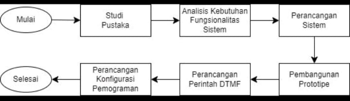
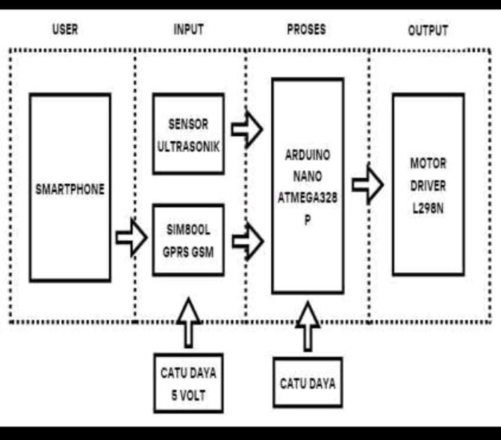

Abstrak
Robot Remote Control merupakan perangkat mekanik yang dikendalikan dari jarak jauh. Penelitian ini bertujuan mengatasi kendala keandalan dan efisiensi komunikasi pada pengendalian jarak jauh robot dengan menggunakan teknologi DTMF dan modul SIM800L GPRS GSM. Prototipe terdiri dari modul SIM800L GPRS sebagai modul komunikasi, Arduino Nano digunakan sebagai mikrokontroler utama, motor driver L298N untuk mengontrol motor DC, sensor ultrasonik HC-SR04 untuk deteksi objek, dan komponen elektronik lainnya. Pengujian dilakukan untuk memastikan koneksi ke jaringan seluler, penerimaan panggilan, dan penggunaan DTMF, serta fitur keamanan agar robot hanya merespon perintah dari nomor yang diizinkan. Hasil penelitian menunjukkan bahwa prototipe berhasil memenuhi kebutuhan fungsionalitasnya. Robot dapat dikontrol secara efektif melalui sinyal DTMF dalam berbagai kondisi jaringan.
Pendahuluan
Pada era teknologi yang terus berkembang pesat, kebutuhan akan sistem kontrol jarak jauh semakin meningkat, terutama dalam pengembangan aplikasi robotika. Robot remote control adalah sebuah struktur yang secara khas dilengkapi dengan aktuator berbentuk roda untuk menginisiasi pergerakan keseluruhan tubuh robot, dengan demikian, robot ini mampu untuk melakukan perpindahan posisi dari satu lokasi ke lokasi lainnya. Robot remote control menjadi solusi yang efektif untuk menanggapi tantangan di berbagai bidang, seperti eksplorasi lingkungan berbahaya, penyelamatan, dan pengawasan area tertentu. Oleh karena itu, pengembangan sistem kontrol yang andal dan efisien menjadi hal yang sangat penting.
Saat ini, sistem kontrol jarak jauh untuk robot masih menghadapi beberapa kendala, terutama dalam hal keandalan dan efisiensi komunikasi. Banyak sistem yang ada menggunakan teknologi berbasis Bluetooth atau Wi-Fi, yang sering kali terbatas oleh jangkauan dan kondisi sinyal yang tidak stabil. Kondisi ini menciptakan gap antara kebutuhan akan kontrol robot yang dapat diandalkan dalam berbagai kondisi lingkungan dan kemampuan teknologi yang ada untuk memenuhi kebutuhan tersebut.
Pembahasan
Hasil pembangunan prototipe ini mencakup implementasi dan integrasi berbagai komponen yang terdiri dari modul SIM800L GPRS GSM, mikrokontroler Arduino Nano, rangkaian motor driver L298N, sensor jarak HC-SR04, dan rangkaian elektronik lainnya. Berbagai tahapan pengujian telah dilakukan untuk memastikan fungsionalitas modul SIM800L, termasuk pengujian koneksi ke jaringan seluler, penerimaan panggilan, dan penggunaan DTMF. Pengujian fitur keamanan dilakukan untuk memastikan bahwa robot hanya merespon perintah dari nomor yang diizinkan dan kode yang benar.
Pengujian respon robot dilakukan untuk mengevaluasi seberapa cepat dan akurat robot merespon perintah yang diterima melalui sinyal DTMF, baik dalam kondisi jaringan yang baik maupun buruk. Hasil pengujian menunjukkan bahwa prototipe ini berhasil memenuhi kebutuhan fungsionalitasnya dan dapat diimplementasikan untuk mengendalikan robot secara jarak jauh melalui panggilan telepon menggunakan teknologi DTMF.
metodologi
gambar 1
perancangan
gambar 2
Kesimpulan
Pengembangan robot remote control menggunakan teknologi DTMF dengan modul SIM800L GPRS GSM telah berhasil dilakukan. Prototipe ini memenuhi kebutuhan fungsionalitasnya dan dapat diimplementasikan untuk mengendalikan robot secara jarak jauh melalui panggilan telepon menggunakan teknologi DTMF. Dengan demikian, pengguna dapat mengontrol robot dengan mudah dan efektif tanpa perlu kehadiran fisik di lokasi yang sama.
Daftar Pustaka
- A.Virmansyah, “Rancang Bangun Prototype Sistem Kendali Pintu Air Bendungan Menggunakan SMS,” Universitas Mercu Buana, 2018.
- Y.Suzantry dan Y. Mardiana, “Mobil Remote Control Berbasis Arduino Dengan Sistem Kendali Menggunakan Android,” Pros. Semin. Ilmu Komput. dan Teknol. Inf., vol. 3, no. 1, pp. 151–158, 2018.
- M. F. Susanto, D. N. Annisa, E. J. Pristianto, “Sistem Penguncian Menggunakan Teknologi DTMF NonStandar Berbasis Mikrokontroler,” Ind. Res. Work. Natl. Semin., pp. 566–569, 2022.
- S. Pakpahan dan A. Agung, “Rancang Bangun AMF-ATS Berbasis SIM800L Dengan Fungsi Monitoring Status Switching Pada Genset,” Jur. Tek. Elektro, vol. 8, no. 1, pp. 81–89, 2019.
- P. R. Santoso, S. R. Akbar, E. S. Pramukantoro, “Implementasi Mekanisme Sleep-Wake Pada Node Sensor Berbasis GSM,” vol. 3, no. 4, pp. 3358–3367, 2019.
- M. Suari, “Pemanfatan Arduino nano dalam Perancangan Media Pembelajaran Fisika,” Nat. Sci. J., vol. 3, no. 1, pp. 474–480, 2017.
- I. P. L. Dharma, S. Tansa, dan I. Z. Nasibu, “Perancangan Alat Pengendali Pintu Air Sawah Otomatis dengan SIM800l Berbasis Mikrokontroler Arduino Uno,” J. Tek., vol. 17, no. 1, pp. 40–56, 2019.
- F. B. Setiawan, Y. Y. C. Wibowo, L. H. Pratomo, dan S. Riyadi, “Perancangan Automated Guided Vehicle Menggunakan Penggerak Motor DC dan Motor Servo Berbasis Raspberry Pi 4,” J. Rekayasa Elektr., vol. 18, no. 2, pp. 94–101, 2022.
- R. A. S. P. S. F. Yudha, “Implementasi Sensor Ultrasonik Hc-Sr04 Sebagai Sensor Parkir Mobil Berbasis Arduino,” EINSTEIN e-JOURNAL, vol. 5, no. 3, pp. 19–26, 2019.
- S. Simanungkalit, “Studi Komparasi Pengontrol Robot Mobil Pada Smartphone Android Berbasis,” Tek. Elektro, Fak. Tek. dan Ilmu Komputer, UNIKOM, pp. 1–7, 2013.
- A. Widiyanto dan N. Nuryanto, “Rancang Bangun Mobil Remote Control Android dengan Arduino,” Creat. Inf. Technol. J., vol. 3, no. 1, pp. 50–61, 2016.
- R. Wijayanto, N. Pambudiyatno, dan P. P. Surabaya, “Rancangan Kontrol Robot Car Menggunakan Gestur Tangan Berbasis Arduino Nano Dan Avr Dengan Sensor,” Semin. Nas. Inov. Teknol. Penerbangan, pp. 1–5, 2018.
- B. Suhendar, A. Surahmat, dan T. D. Fuady, “Sensor Robot Pemadam Api Dengan Beberapa Mode Operasi Berbasis Teknologi Dtmf, Bluetooth Dan Gsm,” J. Ilm. Sains dan Teknol., vol. 4, no. 2, pp. 135–150, 2020.
- A. Wijaya dan D. Juliadi, “Rancang Bangun Robot Pembersih Lantai Menggunakan Arduino Nano Dengan Sistem Pengendali Berbasis Android,” J. Pseudocode, vol. 8, no. 9, pp. 98–107, 2021.
- H. P. Karnila, S. Sumardi, dan D. Darjat, “Pembatas dan Pencatat No Tujuan Telepon yang Dapat Diprogram Untuk Diaplikasikan Pada Pesawat Telepon DTMF Berbasis Mikrokontroler AT89C51,” Naskah akademik Undip, pp. 1–9, 2011.